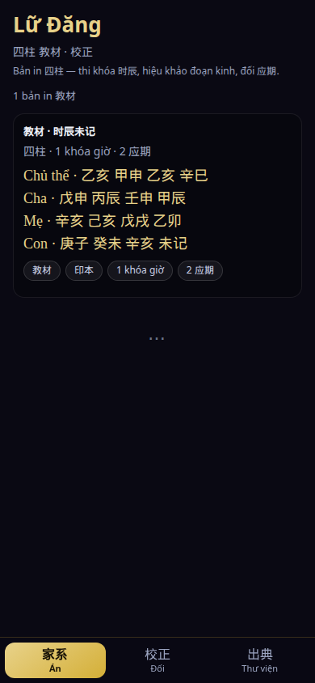
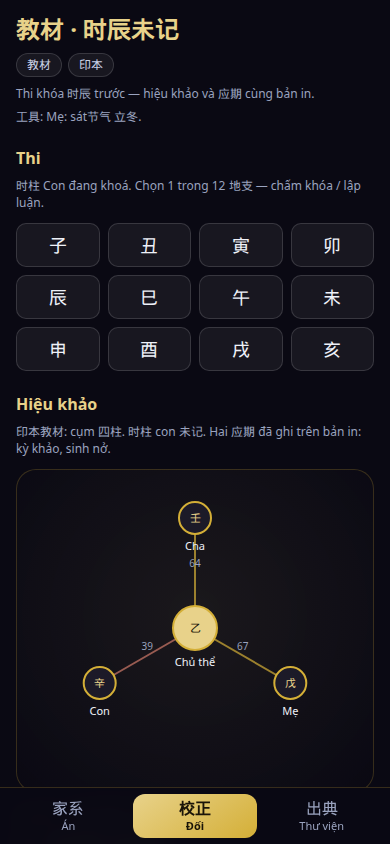
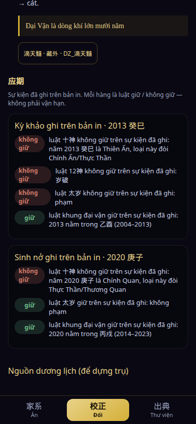

What the reviewer opens: one printed 四柱 teaching plate whose hour pillar is blank. You sit a 12-地支 exam graded on reasoning, collate the engine against a real classical passage, and mark recorded events as 应期 hold / fail. BaZi is the calculator, not a destiny reading.
90-second path (no login)
- Launch — one 教材 / 印本 plate. Cards show role + 干支 (未记 on the blank hour). No birth form. No Gregorian dates.
- Open the plate → Đối — Thi is first: tap 1 of 12 地支. Result is khớp khóa 教材 or lệch khóa.
- Hiệu khảo — engine vs a curated on-device quote (合 / 歧). Tap a cite.
- 应期 — recorded plate events; each row is luật giữ / không giữ.
- Library — citation court; reader highlights the passage. Airplane: plate + math + 1,523 texts stay on device.
Screenshots



What this binary is not
Removed from the iOS binary (not hidden): tarot, runes, qian lots, almanac daily luck, destiny scores, “change fate” CTAs, consumer chat FAB. The website homepage remains a separate web fortune product and is not this listing’s Marketing URL.